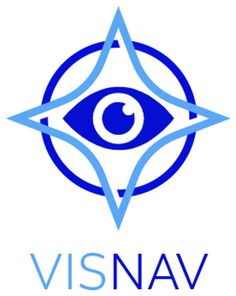
VisNav
In progressTwo haptic wristbands that tell a visually impaired sailor which way to steer.
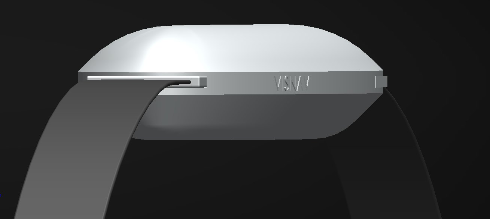
- Type
- Wearable and app
- Context
- Final-year project, Sussex
- Users
- Visually impaired sailors
- Status
- In progress
Holding a course without sight
Visually impaired sailors rely on a sighted crew calling out course corrections. Holding a heading, knowing when to tack and reading wind shifts are the hardest parts.
Driven by the people who would use it
I didn't want to guess what visually impaired sailors need, so every decision in VisNav goes back to them and the people who sail with them.
What the questionnaire found. Visually impaired sailors often sail upwind as well as anyone, but they find it hard to hold a course, know when to tack or gybe and read wind shifts. Most rely on a constant stream of spoken updates from the crew. The most requested solution was vibration or haptics in place of constant speech.
What Pete told me. Today's methods are "left a bit, right a bit" and "one spoke to port". Audio compasses exist, but he said they "vary considerably and can be really annoying to listen to".
What the sailors told me. Spoken instructions get lost in wind and noise, and one sailor described relying on audio as "a bit of an audio overload". Before building anything, I tested the idea by touch with a sailor who is both blind and deaf: a hand on the left shoulder meant steer left, right shoulder steer right, middle of the back on course. They picked it up straight away.
To keep these needs in front of me while designing, I built a persona, Ricky: a 74-year-old sailor who can sometimes see shapes and contrast, uses VoiceOver on his iPhone, and wants to steer without constant verbal cues.
App development for visually impaired sailors
The app is fully audio based. It speaks every screen, confirms every button press out loud and accepts voice input, and it works alongside the phone's own VoiceOver. A sailor never has to read the screen to use it. Once a heading is set, the wristbands take over and the phone can stay in a pocket.
For sailors with some sight, the screen still has to be readable on the water. That meant researching colour and contrast.
When at sea the glare from the sun and the water often washes out low contrast colours, which makes a high contrast colour palette important, especially for visually impaired sailors.
Based on Mather (2024), InFocus Charity
Do
Do not
How I put this into the app.
- High-contrast pairings only: black and white, navy on white, yellow and black. Green with red, blue with black, grey on grey and pale blue on white are avoided.
- Large, bold text and simple layouts with very few buttons on each screen.
- Two big left and right buttons to set the heading, with the new heading read out after every press.
- The app follows the phone's high-contrast, large-text and visibility settings, so it stays readable on a moving boat in bright sun.
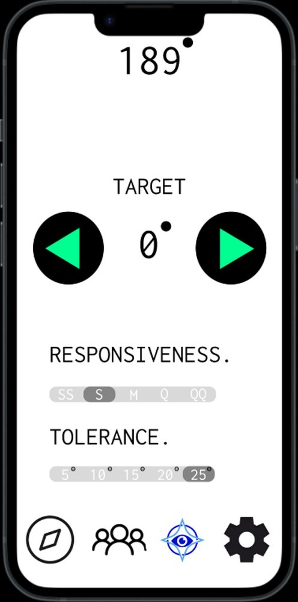
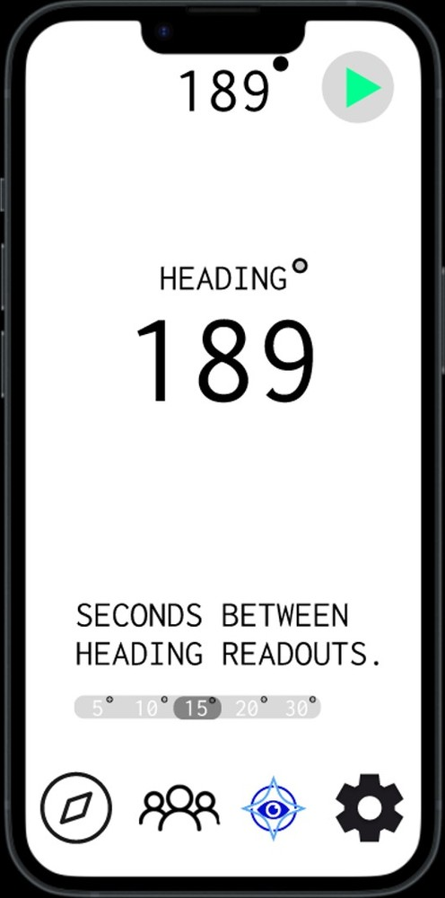
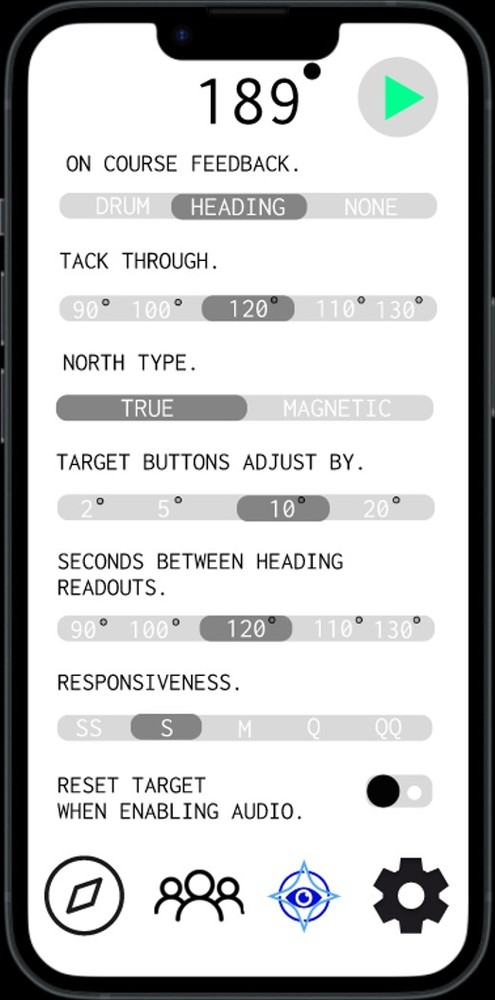
Branding
I designed five logo concepts, from a sailing-club boat to a crossed-out eye, before settling on a compass star around an eye: navigation and sight in one mark.
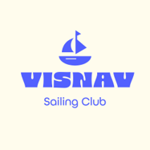
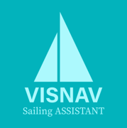
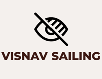
Posters
Posters to go up around Brighton Marina, encouraging sailors to join the course and help test VisNav on the water.
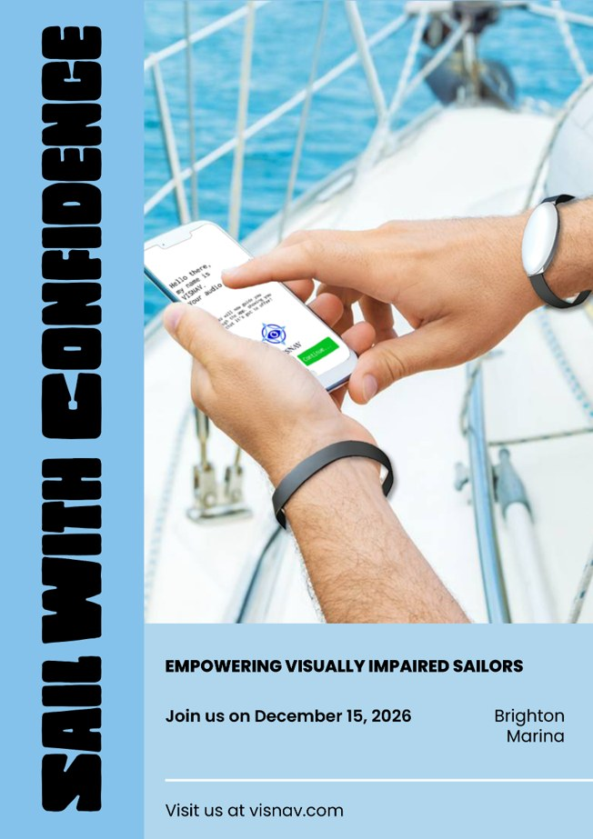
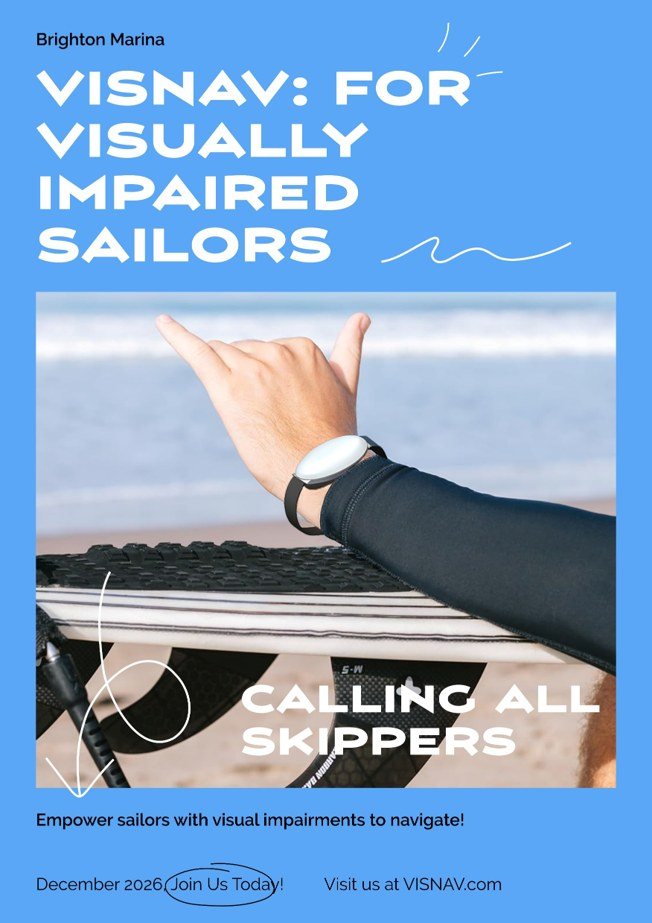
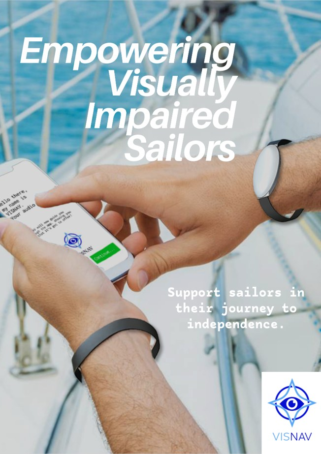
Low-fidelity prototype
Before building any electronics, I tested the core idea by hand during Blind Sailing Week. I sailed with a helm who is both profoundly deaf and severely visually impaired, so spoken instructions were never an option.
We used touch alone. A hand in the middle of the back meant on course. A hand on the left shoulder meant steer left, and a hand on the right shoulder meant steer right.
The sailor understood and responded to the cues quickly and intuitively, with no verbal instructions at all. It was early evidence that steering directions can be communicated through touch.
VisNav keeps exactly the same mapping. Vibrations on the left and right wrists replace the hands on the shoulders, and no vibration means you are on course.